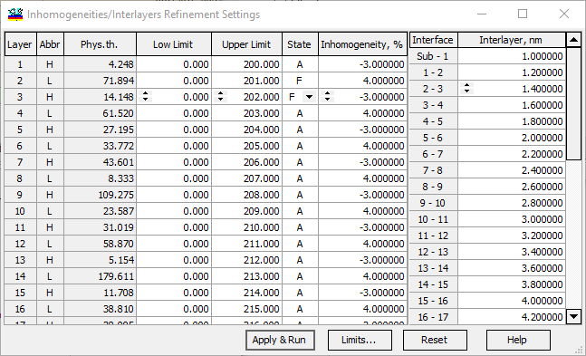
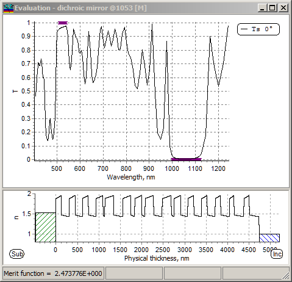

Inhomogeneities/Interlayers Refinement
Inhomogeneities/Interlayers Refinement
This option allows one to refine the coating design by considering the bulk inhomogeneity of coating layers and interface microroughness. This option supports all types of targets (conventional targets, color targets, and integral targets), as well as all features provided by the Cone Angle and Line Width databases. Before starting the Inhomogeneities/Interlayers Refinement procedure, values of inhomogeneity for each layer and thicknesses of interlayers for all interfaces should be specified.

Additionally, it is possible to specify Low and Upper limits for the thicknesses of design layers. This is especially useful for EUV and X-ray applications. The “Limits” button opens an additional Limits Generator dialog to recalculate the upper and lower constraints for layer thicknesses (Th.Min and Th.Max columns).
The “Reset” button allows you to reset all settings to their default values. The “Apply & Run” button starts the computational procedure. The “Close” button closes the Inhomogeneities/Interlayers Refinement Settings dialog.
The Refinement and Evaluation window looks different after applying the Inhomogeneities/Interlayers Refinement procedure.

In the lower part of this window, the current design is represented not as a bar, but as a refractive index profile with additional inhomogeneities in layers and interlayers.

Note 1: The use of the Inhomogeneities/Interlayers Refinement procedure automatically enables the global Inhomogeneities/Interlayers setting.

Note 2: This procedure is typically applied at the final stage of the coating design when fine-tuning of already available solutions is necessary.